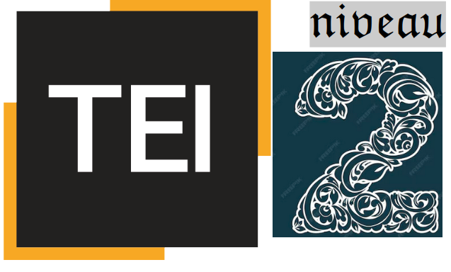

Personnalisation de la TEI : les pratiques
Lou Burnard Consulting
Comment utiliser TEI ODD?
ODD est à la fois un langage de spécification, et un langage de personnalisation.
On se sert du même système pour spécifier ses choix dans le grand bazar de la TEI et pour spécifier le bazar lui-même.
Un ODD de personnalisation est spécifié par rapport à un autre ODD ; typiquement mais pas forcément celui qui définit la version actuelle des Guidelines
- en sélectionnant des modules
- en sélectionnant parmi les objets (éléments, classes, datatypes, macros) fournis par ces modules
- en supprimant ou modifiant quelques-uns des attributs fournis par ces objets
- en modifiant ou remplaçant quelques parties de ces spécifications (par ex. les valList)
- éventuellement en ajoutant des spécifications d’objets nouveaux
Comment créer un ODD
Un ODD est un document TEI comme les autres. Vous pouvez en construire un ex nihilo et le modifier avec oXygen ou n’importe quel autre éditeur XML
Bien sûr il existe des outils pour faciliter une construction initiale :
- interface web ergonomique
- https://roma.tei-c.org
- interface web moins ergonomique
- https://romaantiqua.tei-c.org
- par transformation d'un corpus TEI existant
- https://lb42.github.io/ODD/howtoGenerate-fr.html
Nous allons d'abord partir de zéro, mais nous revenons sur les autres ...
Création d’une personnalisation
Comme vous le savez déjà, on utilise l’élément <schemaSpec> pour spécifier un schéma
<schemaSpec start="TEI" ident="testschema"
docLang="fr">
</schemaSpec>
- L’attribut ident obligatoire fournit un nom pour le schéma
- L’attribut start indique le ou les noms des élément(s) racine(s) du schéma
- L’attribut source indique l’emplacement des déclarations référencées par le schéma (par ex. une version spécifique de TEI P5)
- Les attributs docLang et targetLang permettent la sélection des langues à utiliser pour les descriptions d’éléments et pour les noms d’éléments respectivement, en supposant la présence dans cette source des traductions requises
Astuces: un seul document peut rassembler plusieurs <schemaSpec> qui partagent (par ex.) un ensemble commun de <specGrp> ; un ODD peut servir comme base pour un autre (‘oddChaining’)
Usage de l’attribut source
L’attribut source sert à spécifier la source des déclarations qu’on souhaite intégrer : par défaut dans la version la plus récente de TEI P5.
Ou bien…
<schemaSpec ident="test2" prefix="tei_"
start="TEI" source="tei:4.6.0">
</schemaSpec>
ou, plus explicitement :
<schemaSpec ident="test3" prefix="tei_"
start="TEI"
source="http://www.tei-c.org/Vault/P5/4.6.0/xml/tei/odd/p5subset.xml">
</schemaSpec>
ou, utilisant un autre ensemble de déclarations pas forcément TEI:
<schemaSpec ident="test4"
source="myCompiled.odd">
</schemaSpec>
source peut aussi être utilisé sur <classRef>, <elementRef>, <macroRef>, et <moduleRef> : il doit pointer vers un ODD compilé
Composants d’un <schemaSpec>
- <moduleRef> : un ensemble prédéfini d’objets (la TEI en fournit 23)
- <elementSpec>, <classSpec>, <dataSpec>, <macroSpec> : des objets nouveaux
- <elementRef>, <classRef>, <dataRef>, <macroRef> : des objets déjà existants quelque part
Une histoire de *Spec et *Ref
TEI modules (1)
Quels modules selectionner? A part tei, vous aurez assurément besoin de quelques éléments de ces modules :
| module | contenant | P5 | Par exemple... |
| core | éléments communs à presque tout type de documents | 88 | <p>, <hi>, <bibl> ... |
| figures | tables, formules et figures | 7 | <table>, <figure> ... |
| header | les métadonnées bibliographiques et autres | 74 | <fileDesc>, <sourceDesc>, <titleStmt> ... |
| tei | module infrastructural définissant les types de données, les classes, et les macros utilisées partout | 0 |
| textstructure | éléments fondamentaux de structuration | 33 | <front>, <body>, <div>... |
TEI Modules (2)
Pour les manuscrits vous aurez probablement besoin de ceux-ci:
| module | contents | P5 | par ex. |
| gaiji | traitement des caractères et glyphes non Unicode | 8 | <g>, <charDesc>, <glyph> ... |
| msdescription | catalogage et description des manuscrits et des incunables | 69 | <msDesc>, <msContents>, <physDesc>... |
| textcrit | apparat critique classique | 14 | <app>, <rdg>, <lem>... |
| transcr | transcription diplomatique ou génétique des sources primaires | 30 | <sourceDoc>, <surface>, <subst>, <handNote> ... |
TEI Modules (3)
D'autres types de documents sont envisageables...
| module | contents | P5 | Par ex... |
| dictionaries | dictionnaires imprimés | 33 | <entry>, <sense>, <gramGrp>, <etym>... |
| drama | textes du théâtre, du cinéma, etc | 17 | <performance>, <set>, <castList>, <sound>... |
| spoken | transcription de l'oral | 14 | <u>, <pause>, <shift>, <incident> ... |
| tagdocs | documentation des systèmes de balisage (ODD) | 54 | <elementSpec>, <schemaSpec>, <gi> ... |
| verse | textes poétiques | 4 | <caesura>, <rhyme> ... |
TEI Modules (4)
Si vous faites des analyses spécialisées vous aurez peut-être besoin de quelques-uns de ceux-ci :
| module | contents | P5 | Par ex. |
| analysis | mécanismes simples pour l'analyse et l'interprétation | 11 | <s>, <w>, <pc>, <span> ... |
| certainty | indications de certitude et probabilité | 3 | <certainty>, <precision>, <respons> |
| corpus | métadonnées pour les corpus | 14 | <domain>, <particDesc>, <textDesc> ... |
| iso-fs | analyses abstraites utilisant des structures de traits | 28 | <fs>, <f>, <fVal> ... |
| linking | liens, segmentation, alignements | 11 | <ab>, <anchor>, <join>, <link>, <standOff>... |
| namesdates | noms, dates, entités nommées | 59 | <person>, <persName>, <place>, <placeName>, <relation> ... |
| nets | graphes, réseaux génériques, et arborescences | 12 | <graph>, <arc>, <node> ... |
Astuce: pour voir la definition de l'élément XXX, visitez https://tei-c.org/release/doc/tei-p5-doc/en/html/ref-XXX.html. Par ex.: abstract
Sélection par exclusion
Vous pouvez spécifier les éléments que vous souhaitez supprimer parmi ceux proposés par un module :
<schemaSpec start="TEI" ident="testschema">
<moduleRef key="core"
except="mentioned said"/>
<moduleRef key="header"/>
<moduleRef key="textstructure"/>
</schemaSpec>
ou également :
<schemaSpec start="TEI" ident="testschema">
<moduleRef key="core"/>
<moduleRef key="header"/>
<moduleRef key="textstructure"/>
<elementSpec ident="mentioned"
mode="delete"/>
<elementSpec ident="said" mode="delete"/>
</schemaSpec>
(L’attribut mode contrôle la résolution de déclarations multiples)
Sélection par inclusion
Vous pouvez spécifier les éléments que vous souhaitez inclure parmi ceux qui sont proposés par un module :
<schemaSpec start="TEI" ident="testschema">
<moduleRef key="core"/>
<moduleRef key="header"/>
<moduleRef key="textstructure"
include="body div"/>
</schemaSpec>
ou également :
<schemaSpec start="TEI" ident="testschema">
<moduleRef key="core"/>
<moduleRef key="header"/>
<elementRef key="div"/>
<elementRef key="body"/>
</schemaSpec>
Attention ! un module peut définir d’autres choses que des éléments, notamment des classes. Les attributs include et except ne s’appliquent qu’aux éléments
Spécifications multiples
Le traitement d’un ODD implique la résolution de spécifications multiples pour un même objet
Supposons deux <elementSpec> pour un même élément, la résolution est déterminée par la valeur de l’attribut mode
mode='add' (défaut) : effectuer une nouvelle déclarationmode='delete' : aucune déclaration n'est valide, l’élément est supprimémode='replace' : cette déclaration remplace entièrement toute autre déclarationmode='change' : les parties de cette déclaration remplacent les parties correspondantes dans une autre déclaration ; le reste ne change pas.
Par exemple
<schemaSpec start="TEI" ident="testschema">
<moduleRef key="core" include="p hi"/>
<elementSpec key="p" mode="delete"/>
</schemaSpec>
L’élément <p> est supprimé
<schemaSpec start="TEI" ident="testschema">
<moduleRef key="core" include="p hi"/>
<elementSpec key="p" mode="change">
<desc>Pour nous, un
<gi>p</gi> ne peut contenir que du texte</desc>
<content>
<textNode/>
</content>
</elementSpec>
</schemaSpec>
Le contenu et la description de l’élément <p> sont changés ; ses autres propriétés ne changent pas
Traitement d’un ODD
- Toutes les déclarations (*Spec et *Ref) sont d’abord réunies et canonisées
- Les déclarations multiples sont résolues
- La sortie de cette procédure est ensuite transformée en schéma, et/ou en documentation, en utilisant des feuilles de style XSLT
La feuille de style odd2odd nous permet d’effectuer les deux étapes initiales et d’en conserver le résultat : nous appelons cela un ODD compilé
Un tel fichier est réutilisable comme la source d’un autre ODD
Regardons un exemple
<body>
<head>Une personnalisation TEI pour la transcription collaborative</head>
<p>Cette personnalisation propose un schéma minimal pour la transcription
collaborative des documents d'archive. </p>
<schemaSpec ident="transMin"
start="TEI text div" docLang="fr">
<moduleRef key="tei"/>
<moduleRef key="header"
include="teiHeader fileDesc titleStmt publicationStmt sourceDesc"/>
<moduleRef key="textstructure"
include="TEI text body div"/>
<elementRef key="ab"/>
<elementRef key="pb"/>
<elementRef key="unclear"/>
<elementRef key="hi"/>
<elementRef key="name"/>
<elementRef key="title"/>
<classRef key="att.global.rendition"
except="rendition style"/>
<classSpec type="atts"
ident="att.declaring" mode="delete"/>
<classSpec type="atts"
ident="att.edition" mode="delete"/>
<classSpec type="atts"
ident="att.editLike" mode="delete"/>
</schemaSpec>
</body>
Exemple (suite)
- nous ajoutons une spécification pour un élément non-TEI, appartenant à un autre espace de nommage
- cette spécification comporte
- une description
- une indication des classes TEI auxquelles l'élément appartiendrait
- une indication de son contenu possible
<elementSpec ident="botName"
ns="http://monexcellentprojet.com">
<desc xml:lang="fr">nom botanique</desc>
<desc xml:lang="en">botanical name</desc>
<classes>
<memberOf key="model.phrase"/>
<memberOf key="att.global"/>
</classes>
<content>
<macroRef key="macro.paraContent"/>
</content>
</elementSpec>
Exemple (suite)
Nous souhaitons modifier légèrement l'élément <hi>
- la spécification de son attribut rend sera remplacée:
- son type de données devient une énumération
- les valeurs possibles sont explicitées
- les autres caractéristiques de l'élément <hi> restent inchangés
<elementSpec ident="hi" mode="change">
<attList>
<attDef ident="rend" mode="replace">
<datatype>
<dataRef key="teidata.enumerated"/>
</datatype>
<valList type="closed">
<valItem ident="underline"/>
<valItem ident="superscript"/>
</valList>
</attDef>
</attList>
</elementSpec>
A vous de jouer: un schema superLite
Vous etes embauché.e par un projet de corpus linguistique. On vous dit que ‘TEI Lite’ est trop lourd, et ‘TEI simplePrint’ trop complexe. A vous de proposer un schéma TEI hyperLeger très simple, mais bien adapté aux attentes des clients...
- L’en-tête TEI ne possèdera que les composants essentiels à sa conformité (à savoir : <teiHeader>, <fileDesc>, <titleStmt>, <publicationStmt> <sourceDesc> et <title>)
- L’élément <text> sera composé d’un seul <body> contenant des <div>s contenant un ou plus d’éléments <ab>
- Chaque <ab> ne permettra qu’une séquence d’éléments <s>
- Chaque <s> est composé d’éléments <w> pour les mots et d’éléments <pc> pour les signes de ponctuation (à part les blancs)
- Comme attributs globaux on va garder notamment xml:id, xml:lang, type, et rend
Exercice
- Ouvrez le fichier superLite-1.odd avec oXygen
- Testez votre compréhension de ce fichier
- Utilisez oXygen pour générer un schéma dans votre langage de schéma préféré et un petit manuel en HTML
- Créez un nouveau document TEI XML qui utilise ce schéma: oXygen vous indique les éléments qu'il faut fournir, en commençant par un <text>...
- Enregistrez votre document valide dans un fichier superTest.xml
Nous allons modifier un peu plus ce schéma pour :
- supprimer plusieurs attributs inutiles
- ajouter un nouvel élément
- simplifier le modèle de contenu de quelques éléments
(1) Suppression d’attributs
Pour supprimer un attribut il faut savoir d’où il vient :
- soit il est défini avec l’élément qui le comporte (assez inhabituel)
- soit il est hérité d’une classe
- qui peut elle-même hériter des attributs d’une autre classe
On peut supprimer ou modifier un attribut
- en modifiant juste l’élement qui le comporte (effet local)
- en modifiant la participation à la classe qui le fournit (effet local)
- en modifiant ou supprimant la classe entièrement (effet global)
Par exemple
- supprimez partout les attributs decls (fournis par la classe att.declaring) et source (fourni par la classe att.source)
<classSpec type="atts" mode="delete"
ident="att.declaring"/>
<classSpec type="atts" mode="delete"
ident="att.source"/>
- la classe att.global.rendition nous fournit 3 attributs, et nous n'en souhaitons qu'un (rend): il y a deux manières de supprimer les autres :
<classRef key="att.global.rendition"
except="style rendition"/>
<classRef key="att.global.rendition"
include="rend"/>
(quelle est la différence?) - supprimez partout les attributs xml:base et xml:space fournis par la classe att.global, sans perdre les autres
<classSpec type="atts" ident="att.global"
mode="change">
<attList>
<attDef ident="xml:base" mode="delete"/>
<attDef ident="xml:space" mode="delete"/>
</attList>
</classSpec>
- supprimez partout les attributs fournis par la classe att.global.responsibility (cert et resp) : cette classe participe à la classe att.global, donc nous modifions la liste des sur-classes pour att.global:
<classes>
<memberOf key="att.global.rendition"/>
</classes>
Dans ce dernier cas, l'élément <classes> est forcément à remplacer entièrement
Effectuez ces modifications dans le fichier superLite-1.odd et enregistrez-le sous le nom de superLite-2.odd si tout se passe bien...
(2) Ajout d’un nouvel élément
Nous souhaitons ajouter un élément <mw> pour baliser les ‘multiwords’ (concept linguistique un peu inexact mais... )
- il faut fournir un <elementSpec> complet
- le nouvel élément devrait être attribué à son propre espace de noms
- il est avantageux de le faire participer à une des classes TEI existantes pour qu’il apparaisse dans les modèles de contenu pertinents: dans ce cas, nous le considérons comme une variété de segment linguistique, et donc nous proposons de l'affilier à la classe model.segLike
<elementSpec ident="mw"
ns="http://myNameSpace.org">
<gloss>multiword</gloss>
<desc>sequence de mots qui semble
fonctionner comme un mot unique </desc>
<classes>
<memberOf key="model.segLike"/>
<memberOf key="att.global"/>
<memberOf key="att.typed"/>
</classes>
<content>
<alternate maxOccurs="unbounded">
<textNode/>
<elementRef key="w"/>
</alternate>
</content>
</elementSpec>
Modifiez votre fichier superLite-2.odd en ajoutant la déclaration ci-dessus. Voir l'effet sur le schéma généré et sa documentation.
(3) Modification du modèle de contenu
- La plupart des modèles de contenu s'expriment avec une macro, qui fait référence à des classes
- Regardez par ex. la spécification de l'élément <s> dans notre petit schéma
- La macro macro.phraseSeq définit un modèle permettant soit du texte soit des éléments des classes model.gLike, model.phrase et model.global
- Suivez la hiérarchie des déclarations et vous constaterez que la plupart de ces classes sont vides
- En effet, les seuls éléments disponibles sont <title>, <s>, <w> et (après la modification précédente) <mw>
Pour simplifier cela il faut changer le <content> de <s>.
Changement du modèle de contenu
Ajouter dans votre ODD la déclaration suivante:
<elementSpec ident="s" mode="change">
<content>
<alternate maxOccurs="unbounded">
<elementRef key="w"/>
<elementRef key="mw"/>
</alternate>
</content>
</elementSpec>
Modifiez votre fichier superLite-2.odd en ajoutant la déclaration ci-dessus. Voir l'effet sur le schéma généré et sa documentation.
Attention : un changement de modèle de contenu risque de mettre en cause la conformité de votre schema à la TEI
À propos des exemples d’usage
Évidemment, si on décrit un schéma XML on va inclure des exemples d’usage en XML. Si la documentation s’exprime également en XML, il faut être astucieux… Il y a trois approches possibles :
- tout cacher avec un "CDATA marked section" (magique, hérité de SGML)
- tout échapper en utilisent des "références" (
&lt; etc) - utiliser un autre espace de noms
Par exemple:
<![CDATA[<p>un paragraphe</p> ]]>
<p>un paragraphe</p>
<egXML xmlns="http://www.tei-c.org/ns/examples"> <p>un paragraphe</p> </egXML>
Seul le dernier vous permet de valider vos exemples : un plus très avantageux
Ajout des exemples d'usage
- Les exemples d'usage dans la documentation générée sont, par default, tirés des TEI Guidelines
- Puisque nous modifions le contenu possible d'un élément, ces exemples "canoniques" risquent de devenir invalide En plus, ces exemples ne sont pas forcément bien adaptés à notre projet. De meme, il y a des remarques generiques dans la specification qui ne s'applique pas tres bien a notre cas.
- Ajoutez donc un nouvel élément <exemplum> après le <content> dans votre nouvelle spécification de <s>, suivi d'un nouvel element <remarks>
- L'élément exemplum contient un <egXML
xmlns="http://www.tei-c.org/ns/Examples">
- L'élément <remarks> contient un <p/>
<exemplum> <egXML xmlns="http://www.tei-c.org/ns/Examples">
<s><w>Quand</w> <w>partez</w><w>-</w><w>vous</w><w> ?</w></s>
<s><w>Demain</w><w>.</w></s>
</egXML>
</exemplum>
<remarks><p/></remarks></egXML>
- Regénérez votre schéma et sa documentation; contrôlez la doc pour voir l'effet de ces modifications; assurez-vous que votre fichier superTest.xml reste valide.
- Nota: comme les <memberOf>, les <exemplum> et les <remarks> ne sont pas identifiables; ajouter un seul sert à remplacer tous.